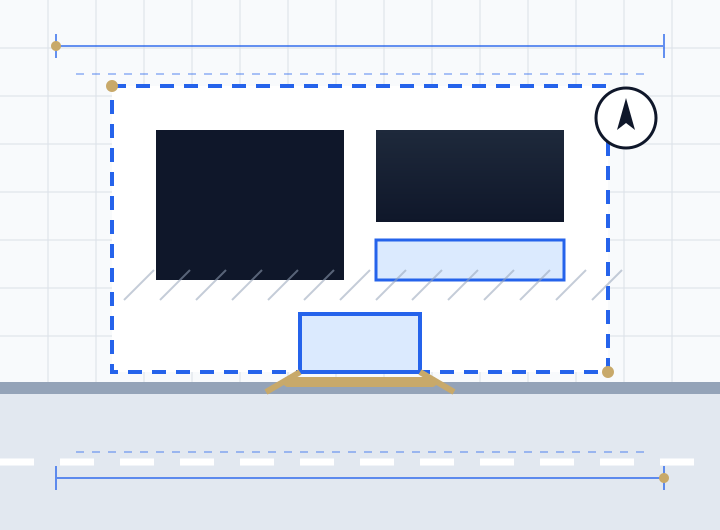

A dropped kerb (vehicle crossover) in the UK typically costs around £2,000 in total in 2026, made up of a council application fee of roughly £125 to £500 and construction of about £750 to £3,000 depending on the number of kerb stones and the width of the footway. Every dropped kerb needs approval from the council's highways team, because you are altering the public pavement. You also need planning permission if the property fronts a classified A, B or C road, is a flat or maisonette, is listed, or where local restrictions apply. The whole process often takes around three months.
A dropped kerb looks like the simplest job on the street, but applications are refused surprisingly often. The reasons are nearly always the same: the parking space is too short, a tree or lamp column is in the way, visibility is poor, or the road is classified and nobody applied for planning permission. Knowing the rules before you pay for the application saves money and months.
This guide covers dropped kerb costs for 2026, council approval, when planning permission is needed, the drawings required and the most common reasons for refusal. It covers England.
Key takeaways
- Typical total cost is around £2,000, with council fees of about £125 to £500 and construction from about £750.
- Highways approval is always needed. Planning permission is needed on classified roads and for some property types.
- Your driveway must be deep enough to park without overhanging the pavement, often around 4.8 to 5 m.
- Trees, lamp columns, gullies, utility boxes and parking bays are common reasons for refusal.
- A new front driveway over 5 m² must be permeable or drain to a lawn or border, or it needs planning permission.
- Many councils require their own contractor or an approved contractor to build the crossover.
How much does a dropped kerb cost in 2026?
Costs have two parts: the council's fees and the construction work. Published October 2026 figures give these typical construction costs, excluding council fees:
| Number of kerb stones | Footway under 2 m | Footway 2 to 3 m | Footway over 3 m |
|---|---|---|---|
| 2 | £750 to £950 | £900 to £1,100 | £1,050 to £1,300 |
| 3 | £900 to £1,200 | £1,100 to £1,400 | £1,300 to £1,700 |
| 4 | £1,100 to £1,400 | £1,300 to £1,700 | £1,500 to £1,900 |
| 5 | £1,300 to £1,700 | £1,500 to £1,900 | £1,700 to £2,200 |
| 6 | £1,500 to £1,900 | £1,700 to £2,200 | £2,000 to £2,600 |
| 7 | £1,700 to £2,200 | £2,000 to £2,500 | £2,300 to £3,000 |
Council fees and other charges
| Item | Typical cost |
|---|---|
| Council application fee | About £125 to £500 in England, varying by council |
| Inspection fee | About £50 to £150 |
| Traffic management | About £200 to £500 or more, where needed |
| Planning application | The national householder fee, where planning permission is needed |
| Moving a lamp column, gully or utility box | Quoted separately by the council or utility company, often expensive |
| Changing a parking bay | May need a traffic order, charged by the council |
London residents typically pay around £100 to £300 more than those in the North. The driveway itself is a separate cost, and if you need drawings for the application, see our architectural drawings cost guide.
Two approvals: highways and planning
Highways approval (always needed)
Under the Highways Act 1980, you cannot cross the pavement in a vehicle to reach your property without a proper crossing approved by the highway authority. You apply to your council's highways team, which checks the location, size and safety of the crossing. Many councils build the crossing themselves or require an approved contractor.
Planning permission (sometimes needed)
You also need planning permission if:
- The property fronts a classified road (an A, B or C road).
- The property is a flat, maisonette or commercial building, which does not have householder permitted development rights.
- The building is listed, or local restrictions such as an Article 4 direction apply.
On an unclassified residential street outside these situations, highways approval alone is normally enough. Your council's highways team can confirm whether a road is classified.
What councils look for
| Requirement | Why it matters |
|---|---|
| Parking depth | A car must park at right angles without overhanging the pavement. Many councils ask for around 4.8 to 5 m, some more |
| Parking width | Enough width to park and open doors within the property |
| Visibility | Drivers must see pedestrians and traffic when pulling out |
| Obstructions | Street trees, lamp columns, gullies, utility boxes and bus stops can block or add cost |
| Road type | On busy or classified roads, councils may require space to turn so you drive out forwards |
| Parking bays and controls | Resident bays or yellow lines may need changing through a traffic order |
| Junctions | Crossings too close to a junction are usually refused |
Criteria vary between councils, so always read your highway authority's dropped kerb policy before applying.
Common reasons for refusal
- Parking space too short, so a car would overhang the footway.
- Street tree in the way, which councils rarely agree to remove.
- Lamp column, gully or utility box in the crossing position, with no practical way to move it.
- Poor visibility, for example from walls, hedges or a bend.
- Classified road without planning permission, or no room to turn.
- Too close to a junction, pedestrian crossing or bus stop.
Drawings for a dropped kerb application
Many councils accept a simple form for straightforward cases, but a clear scaled drawing helps approval, and planning applications always need drawings. A good set shows:
- Location plan at 1:1250 with the site edged red.
- Site plan at 1:100 or 1:200 showing the house, front boundary, driveway layout and parking space dimensions.
- Crossover position and width, number of kerb stones and pavement width.
- Obstructions such as trees, lamp columns, gullies and utility covers.
- Visibility splays where the council requires them.
- Surface and drainage of the new driveway, showing it is permeable or drains within the property.
Our drop kerb drawings service prepares these to your highway authority's requirements, and will tell you before you apply if the frontage is unlikely to work.
How the dropped kerb process works
- Check the frontage against your council's policy: depth, width, obstructions and road classification.
- Apply for planning permission first if the road is classified or the property needs it.
- Apply to highways with the fee and drawings. Approval often takes several weeks, sometimes up to 12.
- Construction by the council or an approved contractor, usually 1 to 2 days on site for 3 to 5 kerb stones, but scheduling can take weeks.
- Build the driveway with a permeable surface or drainage within the property.
Allow around three months or longer from start to finish.
Driving over the pavement without a dropped kerb
Driving across the pavement without an approved crossing can damage the footway and utilities underneath, and councils can take action, including recovering the cost of repairs. It can also cause problems when you sell, as buyers' solicitors may ask whether the access is authorised.
Related projects
If you are creating parking as part of a bigger project, see planning drawings for a house extension, permitted development vs planning permission and change of use planning permission for flat and HMO conversions, where parking is often assessed. For new homes, see outline planning permission.
How we help
We check your frontage against your council's dropped kerb criteria and prepare the site plan, crossover layout and, where needed, the planning application drawings. We work remotely across England, including London, Birmingham, Leicester, Coventry and Liverpool. Send us a photo of the frontage and your address for a quick check.
Frequently asked questions
How much does a dropped kerb cost in 2026?
Around £2,000 in total is typical. Council application fees are roughly £125 to £500, and construction costs about £750 to £3,000 depending on the number of kerb stones and the width of the footway.
Do I need planning permission for a dropped kerb?
You always need highways approval from the council. You also need planning permission if the property fronts a classified A, B or C road, is a flat, maisonette or commercial building, or is listed.
How long does it take to get a dropped kerb?
Council approval often takes several weeks and sometimes up to 12 weeks, and construction can take a further few weeks to schedule. Allow around three months overall.
How deep does a driveway need to be for a dropped kerb?
It varies by council, but many ask for around 4.8 to 5 m so a car can park at right angles without overhanging the pavement. Check your highway authority's policy.
Can a dropped kerb application be refused?
Yes. Common reasons are a parking space that is too short, a street tree or lamp column in the way, poor visibility, being too close to a junction, or a classified road without planning permission.
Can I use my own builder for a dropped kerb?
Only if your council allows it. Many councils carry out the work themselves or require a contractor from an approved list with suitable insurance and accreditation.